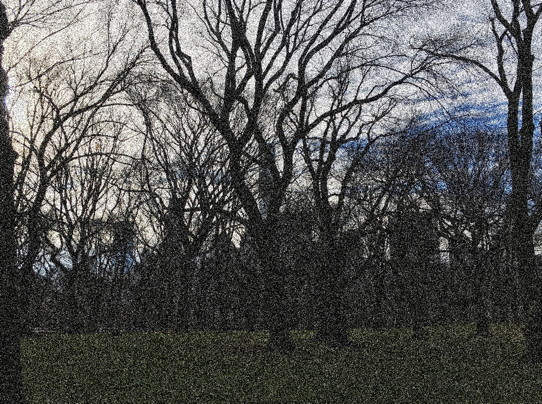
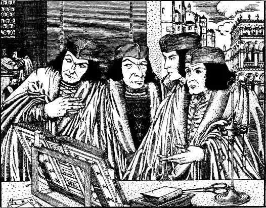
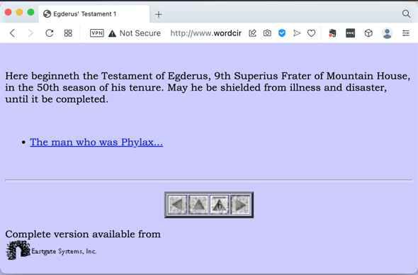
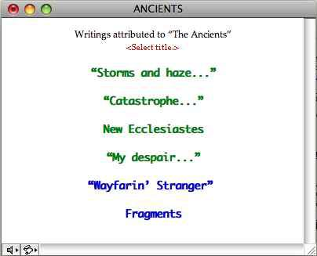
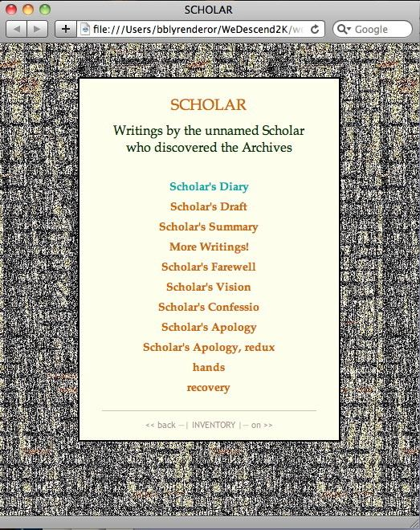
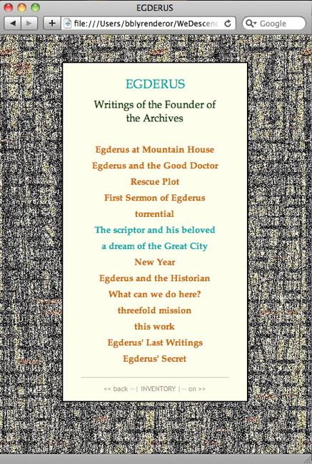
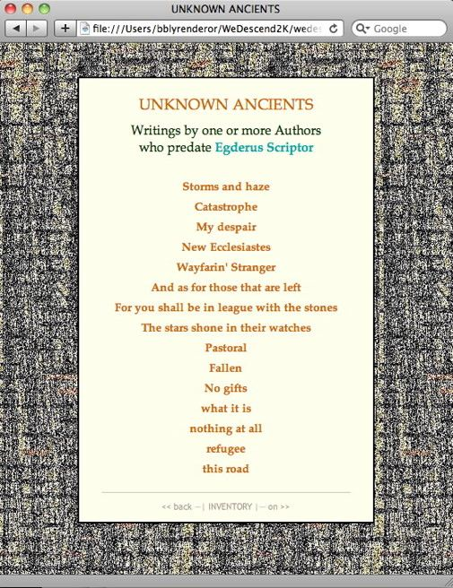
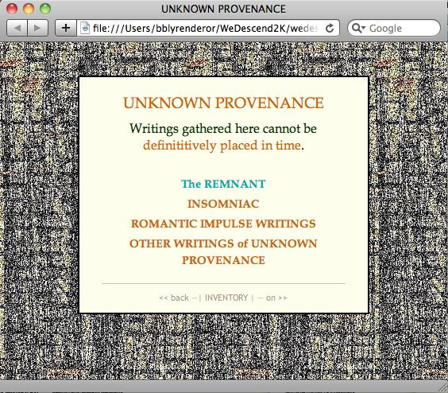
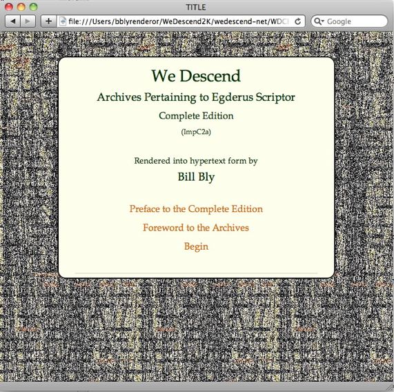
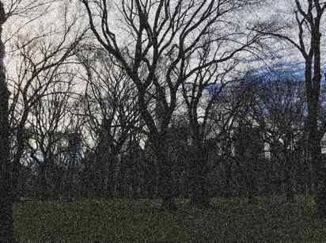

Handbook to
We Descend
Complete Edition
(ImpC2a)
ELL | WSUV
Spring 2023
Preface to WDCE Handbook
We Descend is the hypertext rendering of the Archives Pertaining to Egderus Scriptor, a group of writings gathered and passed along over a span of many generations. During their transmission, their Authors were joined by a succession of Curators, some of whom themselves added personal accounts to the work they performed in conveying these texts to us.
This Handbook begins with a video-plus-text Introduction to We Descend: Who's Who, What Happens to Them, and (something of) What It's About. It continues with a more technical description (in HTML alone) of How It's Built — its building-blocks the textTypes, the Organization of the Writings, and the Navigational schema — followed by an account of Where It Came From, a capsule history of the project's development.
Work on We Descend began in EV 1984; Volume One was published in 1997, followed by Volume Two in 2017 and a preview of Volume Three in 2019. The Complete Edition, combining all three volumes, was finalized in August 2022.
My involvement with the project started with the appearance of five words from the Archives: 'If this document is authentic...' What became of that enigmatic phrase is a hyperbook of 121,816 words, 347 lexia, and 3,609 links — at last count...
Thank you for your interest in and kind regard for this long-lived (and ongoing!) work.
Bill Bly, Curator
Archives Pertaining to Egderus Scriptor
Who's Who...
Early on we meet the Scholar, who composed the five words that led me into the Archives...
{SCHOLAR: ... If this document is authentic...}
... If this document is authentic, then a complete reappraisal will be necessary. Our idea of that era is based upon the fact that the only writings we possess are lists, fragments of what might be poetry, and mere descriptions of exotic objects belonging to now-lost inventories.
The document came into my possession via a source I cannot name.
{Scholion ('footnote'): a source I cannot name}
This source has never been identified. There are three main possibilities:
- As implied here, the Scholar knew the source, but withheld the name even from this private diary, in order to protect either the source or himself;
- The Scholar did not know the source — that is, the document somehow just 'appeared on the doorstep', without attribution;
- Despite denials elsewhere, the Scholar himself is the source.
[back to {SCHOLAR: ... If this document is authentic...}]
The document itself is a copy, made very recently, and so of course it may be a forgery, a fiction. I was skeptical myself until I read it, and still harbor serious doubts — or more precisely fears — about its authenticity.
My immediate problem is this: should I present this document to the Conference?
The inciting event in the Scholar's story takes place at a Convention (like say ELO2023), where he does in fact present a report on his research to his colleagues.
[When Matt Kirschenbaum saw this image from Vol1, he said, 'OMG! It's the MLA!!]
Naturally the Scholar hopes that his findings will have an impact on his community, but he gets more than he bargained for: no sooner does he finish his presentation than he is hauled before the ruling Council, his work is confiscated, and he is forbidden to talk about it to anyone, ever again.
The electrifying material he presents to his peers is his discovery of the previously unknown Testament of Egderus, a humble scribe who lived many generations before.

Egderus' work leads to even older materials, an archive of writings created sometime deep in the unfathomable past.

The problem with these mostly fragmentary texts — authentic or not — is the hypothesis they put forth that the Ancients, whom the people of the Scholar's time revere and worship as Deities, were not gods at all, but in fact mere mortals like themselves: denizens of a vast, magnificent civilization that they themselves destroyed, out of foolishness, or negligence, or something worse. This disrespectful portrait of the Ancients may account, at least in part, for the brutal response to the Scholar's 'talk & slideshow'.
{Scholion: slideshow}
Several proposals have been advanced to explain this peculiar word. From context, of course, one can deduce that it refers to a device or visual aid utilized in displaying artifacts of research to an assembly of some sort.
But there is no consensus about what it consisted of, or how it was deployed, or what (or who), in fact, did the 'sliding'.
Behind this tragic tale of an independent researcher crushed beneath the wheel of entrenched orthodoxical scholarhip — or a naive blunder by a clueless noob who didn't know what the hell he'd stumbled upon — live the very writings that got him into trouble.
What Happens...
An unnamed Scholar

discovers the work of an archaic scribe named Egderus,

who himself collected texts by even more ancient authors,

and all of these Writings, by Scholar, Egderus, & Ancients, were somehow transmitted, through an era of Unknown Provenance,

to the current curator of the Archives, one Bill Bly, who has rendered the whole into hypertext form...

In other words, the protagonist of We Descend is not the Scholar nor Egderus nor any other person in the Archives: the hero is the Archives themselves — passed along, to us, through many hands, each pair of which did something to preserve and enhance the whole. Reading We Descend is reading the story of those stories.
What It's About...
The first question any person asks when you say you've just read a good book is 'What's it about?'.
Of course We Descend is about more than one thing, but if we were to ask the Founder of the Archives, Egderus Scriptor himself, what his work was about, here's what he would have to say:
from {Testament of Egderus}...
... in my case, every word I copy or passage I notate or link to its distant cousin in another writing is a gift I prepare for my beloved, the reader who someday may pick up this old writing and become absorbed in it. I want that person, unknown to me in every other way, to share my excitement; I want to give that person the liveliest pleasure — to be ravished by something bright and right and beautiful for the first time.
... I have often had the sensation, when absorbed in this or that writing in the archive, that I actually lived at the time it describes, in that place, among those people. Others have told of having the same feeling, and this mental phenomenon is often ascribed to the vividness of the writing that gives rise to it. It is true of course that bad writing, with its distracting errors, worn-out phrases, imprecisions, and mishaps of expression, can rarely if ever invoke this sense of utter familiarity. But it is also the case that truly brilliant writing can be distracting in much the same way, calling attention to itself and away from what it is attempting to convey — or rather, as it is a beautiful thing in itself, we gaze at it rather than the scene for which it is but the messenger, like an angel whose glory is so dazzling that we cannot comprehend the message it has come to deliver.
No, this feeling of recollection comes from within; it is not called forth by some external stimulus, or not only by that, but by an inner need — and this need is fulfilled, however briefly and imperfectly, when it meets another's inner need to speak, to tell how it is with them, and with those from whom they came, or were sent.
It is the need that is utterly familiar, and that meeting is like the one described by those who say that falling in love is not discovering the love of their life but recognizing the person they have always been in love with. Even if — need it be said? — they have never met before.
How It's Built...
The building blocks of the Archives are of course the primary Writings, but what is not often appreciated is that two other quite distinct types of text appear in the Archives: commentary and apparatus. Commentary annotates and interprets the primaryTexts; Apparatus affords finding aids to help the reader locate herself among the many artifacts collected here.
The Curator who first elucidated the distinction between these three textTypes further adduced a notion not often realized: every text has an Author, even if it's only a list of Writings by other Authors, and as such is given equal status with every other Writing in the Archives.
Guidance in reading all three textTypes can be found in the document {On the Arrangement of the Writings}, which provides a succinct overview of the organization of all the elements of the piece as it stands today.
Navigation: Getting Around In We Descend
To ease the reader into the architecture of the piece, one Curator constructed what might be called an entrance corridor, the PATHWAY, which provides an introductory tour of the Writings.
As explained in {Preface to the Complete Edition}, the first step on the PATHWAY is the TITLE, where a textLink off the word 'Begin' leads to the Epigraph, and from there through a default sequence of fifteen exemplary texts that introduce the principal persons in the Archives and some of their stories. The PATHWAY foots out at the LANDING, a portal to everything else in the Archives.
A navigation bar appears at the bottom of each page; 'back' and 'on' links signify 'previous' and 'next' along a fixed path —these links should not be confused with the browser's back & forth buttons in the window's toolbar, which of course follow the sequence of the reader's history list. (Minor feature note: many apparatus pages are also placed along a fixed path, each arranged in descending order, as with most other Writings.)
[TECHNICAL NOTE: In the HTML pages belonging to the PATHWAY, the number of crossLinks has been kept to a minimum, in order not to distract the reader before she has had a chance to master the interface. This device has been contrived by making two pages for each such Writing, one with simplified navigation for the early reader, and a fully cross-linked one for the reader who has 'graduated' from the PATHWAY. In the Complete Edition there are 35 such 'doppelgänger' pages, to whose fileName the numeral '1' has been prepended. For example, when a new reader first enters We Descend at the FRONTISPIECE, and continues to the DEDICATION, she then arrives at the first PATHWAY page, <1TITLE.html>. From there she can read <1PrefacetotheCompleteEdition.html>, <1ForewordtotheArchives.html>, or choose 'Begin' to go to <1Epigraph.html>, which leads to <1Stormsandhaze.html>, then <1ScholarsDiary.html>, and so on through the rest of the PATHWAY Writings, until she fetches up at the LANDING. Thereafter, all pages the reader encounters will lack this initial '1' in their fileNames — including Writings she has already read whilst following the PATHWAY, which on this second reading will contain many crossLinks they did not display at first, as well as a modified navigation bar at the bottom.]
[PERSONAL NOTE: In the application Storyspace, which was used to compose WDvol1, this default path affordance was created by deploying guard fields, which I pretty much despise. The way I 'spoof' this default path in HTML is super-clumsy, but it does what is needed. If this affordance can be realized by means of a more elegant maneuver, I'm all for it, as long as the introductory 'tour' gambit works. — BBly Renderor]
Where It's Come From...
We Descend has a long history; herebelow a capsule listing of its Technological, Literary, and Theoretical developments in turn.
Technological progression
From—To
- 1984—93: fountain pen on notebook paper jammed in a clipboard
- 1993—2003: Storyspace v1 then v2
- 2004—2012: Tinderbox v4 then v5
- 2013—14: Scrivener: experiment in preparing to export to print, ebook, &or HTML (abandoned)
- 2014— Tinderbox v6 then v7 (TBX is now at v9.x), then back to v4.7.1
Literary development
Vols & Imps — eg WDCE_ImpC2a = We Descend, Complete Edition, Implementation C (third major version, for WWW) 2 (second draft) a (first revision)
- WDVol1:
- begun in earnest fall 1995 in Rob Kendall's HTPoFic at New School; early demo at Eastgate Conference Sep1995; ImpA1a submitted for NYFA grant (no luck)
- ImpE7c completed & submitted to Eastgate summer1996;
- ImpE7d published by Eastgate Nov 1997
- [WDvol1_ImpF2b (ie, 2nd Edition) prepared in HTML|CSS 2014; unpublished]
- WDvol2:
- Begun in earnest 1999, inspired by Cybermountain
- demo ImpA1a in Tinderbox4 completed 2011; exhibited in E-lit Gallery MLA2013
- ported to HTML|CSS 2014 (began deep study of RWD)
- finished ImpC for web in 2016 (first year in Mexico);
- ImpC1g published by The New River in the Fall 2017 issue (appeared spring 2018)
- ImpC1g published in Electronic Literature Collection 4 (June 2022)
- WDvol3:
- Begun in earnest 2018, after publication of Vol2;
- demo version finished 2019; published in Wordhack Anthology June 2019;
- ImpA1a: 'Preliminary View' published by The New River in the Fall 2019 issue (appeared in spring 2020)
- ImpC1a: completed August 2021 (unpublished)
- WDCE:
- ImpC2a completed August 2022;
- ImpDxx (ELL) in process...
Theoretical ponderings
Volume One presents the principal persons of the Archives telling their stories:
- the Remnant; the Scholar; Egderus and his associates — the Superius Frater, the Good Doctor, the Historian, Robenc, and Aric — and Unknown Ancients
and explores ideas and questions that will surface again and again:
- the matter of authority: the We Descend Heresy and all it signifies
- archivism: preserving-transmitting, commentary, arrangement of artifacts for further study
- the pathos of the past: how it is with us; how it was with those who came before; how finding out how it was with them affects how it is with us; what we owe to those yet to come
Volume Two introduces new Authors: the Romantic Impulse Author, the Voice from the Locust Grove, [The] M[issionary], the Last One — and brings up new topics for further consideration
- fabulism: the Starling, The Exquisite Suzu, Markito Scriptor — someone is doing some mythmaking...
- the scholarship industry: the Conference-Convention-Council Complex, Censure+Confiscation, the destruction of theTemple
- the scriptor & his beloved
- the Last One rails against the ghosts & their evil servant Text
Volume Three introduces seven new Authors
- Insomniac & the Anxious Lover from the post-Scholar era
- Soldier & Exile from the Age of the Scholar
- the Insurgent & the Old Poet from the Age of Egderus
- the Boy & other Ancients among the Archives' earliest Authors
Complete Edition
- Mark Bernstein surmised that WDCE's purpose is '... exploring the limits of annotation...'
- The attempt to tell the whole story all in one place by interleaving the Writings from the previous three Volumes
- The effort to get the interface right — which drove BBly to bring WDCE to ELL...
Frontispiece
